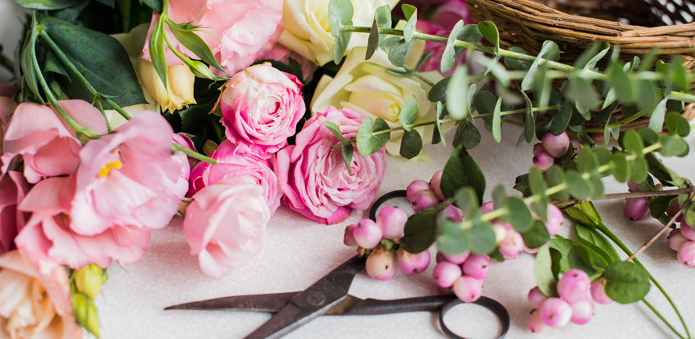

I Want Flowers is a nation wide florist delivering flowers to the whole of Australia. Our florist shop has been operating for over 30 years starting in Redcliffe and has changed management in 2015. We are proud of our talented team of florists.
I Want Flowers sources fresh local flowers to ensure your flower arrangement lasts longer. We have shifted our focus towards a more quality floral arrangement. The fresh flowers are now paired with exquisite ribbons, wrappings and glossy greenery to create an overall superior impression.